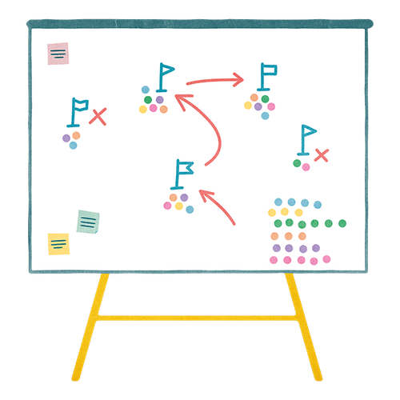

Mit der Academy erhaltet ihr im Business-Plan praxisnahe Lernmodule rund um Facilitation und wirksame Transformation.
Gemeinsam mit 9 Spaces zeigt Plan International Deutschland, wie wertebasiertes Arbeiten Orientierung gibt – nach innen wie nach außen.

Ein Umfrage-Tool, das euch dabei hilft, euren Strategieprozess zu öffnen und die kollektive Intelligenz aller Team-Mitglieder zu nutzen
Purpose, Vision, Strategie, Ziele, Taktiken, Mission. Wer soll da den Überblick behalten? Eine Abgrenzung.
Eine gemeinsame Strategie ist essenziell für selbstorganisierte Teams. Unser leichtfüßiger Prozess hilft dabei, sie zu finden und immer wieder anzupassen.
Um den Blick aufs Wesentliche zu bewahren, helfen diese drei Listen.